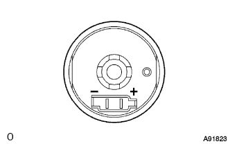

Fuel Suction Tube Assembly (with Pump & Gauge) (2GR-FE) Inspection |
| 1. Inspect Fuel Pump |
Resistance Inspection
 |
Using SST (Toyota electrical tester), measure the resistance between the terminals.
| Tester Connection | Condition | Standard |
|---|---|---|
| (-) - (+) | Fuel pump temperature 20°C | 0.2 to 3.0 Ω |
Operation Check
Apply battery voltage between the terminals and check that the motor rotates.